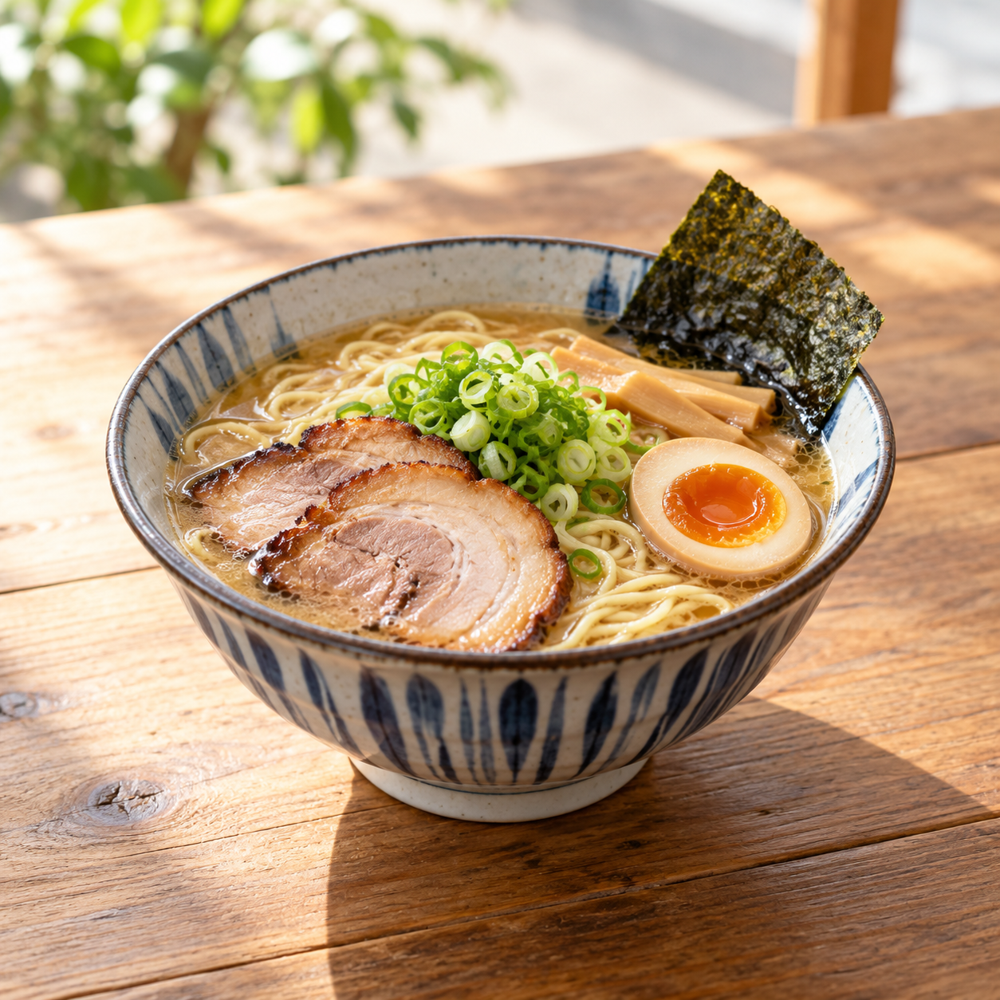
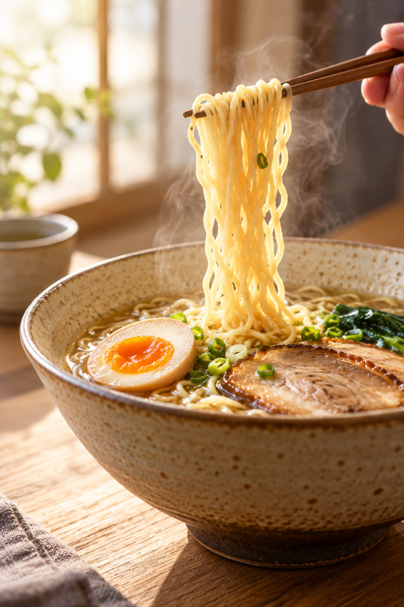
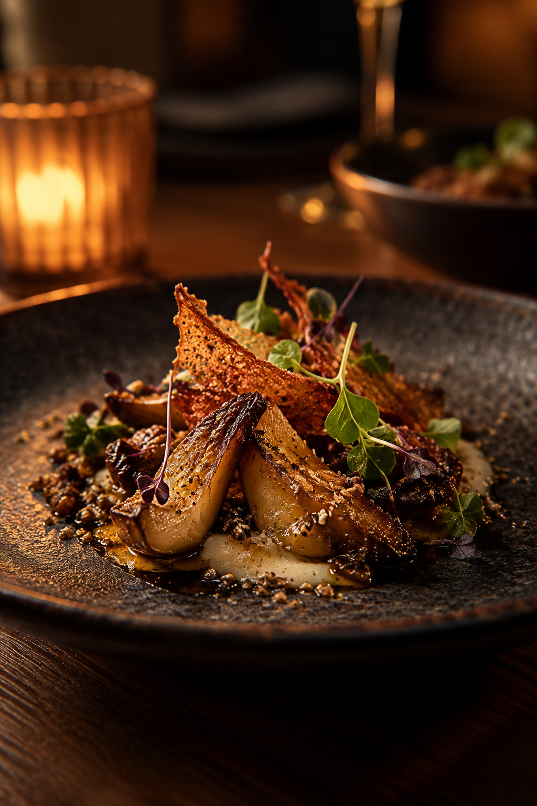

写真はイメージです写真はイメージです
TUMIKI WEB. / 営業提案用 非公式デモ
01 / INTRODUCTION
ひとつの場所に、
ふたつの楽しみ。
昼は中華そば、夜は焼鳥。
時間帯で表情を変える一軒を、ひとつの場所に。
このページは、店舗の魅力を伝えるための営業提案用デモです。実際の営業時間・メニューなどは店舗へご確認ください。

写真はイメージです02 / DAY
昼は、
中華そば八鶏。
やわらかな光のなかで、ゆっくり味わう一杯。
最新の営業日時・メニューは、店舗へご確認ください。
日が暮れたら、
夜の八酉へ。
03 / NIGHT
夜は、
焼鳥 八酉。
香ばしい焼き色と、夜のひとときを。
営業情報は、店舗へご確認ください。
写真はイメージです
写真はイメージです

写真はイメージです営業日時・ご利用方法は、店舗へご確認ください。
04 / INFORMATION
来店前に、
知っておきたいこと。
- 店名
- 焼鳥 八酉（はっとり）
昼：中華そば八鶏 - 住所
- 福岡県福岡市早良区有田8丁目2-5
営業時間・定休日・駐車場・メニュー・料金・予約方法・決済方法は、最新情報を店舗へご確認ください。
Googleマップで住所を見る →05 / CONTACT
気になる方へ、
次の一歩を。
最新情報は、店舗へのお電話または掲載先をご確認ください。